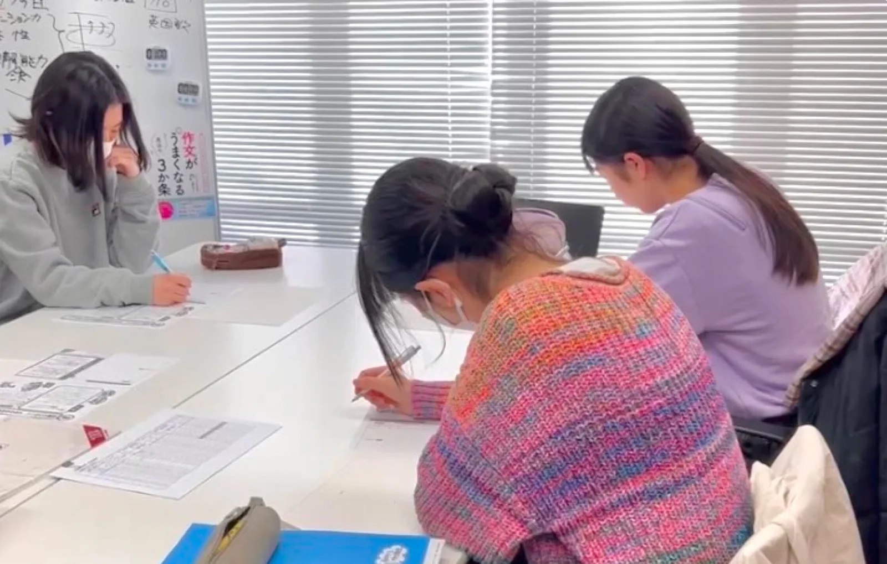
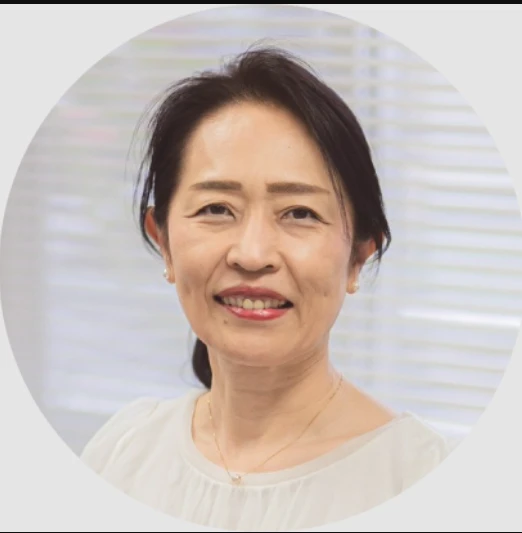

- 数分〜10分動画1本の
長さ - 5〜10分課題をノートに
書く時間 - 毎回授業で
眞野先生が見ます
このページの使い方
1回分は、動画1本と課題1つです
- 01
動画を見る
上から順に見ます。見終わったら「見終わったら押す」を押すと、上の数が増えます。
- 02
課題をノートに書く
動画の下にある課題を、ノートに書きます。5〜10分でできる量です。
- 03
次の授業で、眞野先生に見てもらう
ノートを授業に持ってきてください。分からなかったところも、そのとき聞けます。

動画で基礎を、
授業でその子に合わせて
書き方の基礎は、動画で何度でも見返せます。授業の時間は、一人ひとりの作文と志望校に合わせた指導に使います。分からないところは、そのままにせず授業で聞いてください。
本番までの7つの段
押すと、その段へ飛びます
STEP 01入会した週
まず全体の地図をつかむ
推薦入試で何が聞かれるのか、志望校がどんな子を求めているのかを知ります。
STEP 02作文のイロハ 11月前半・全員
書く力の基礎
原稿用紙の使い方から、意見の書き方まで。ここが全部の土台になります。
STEP 03作文のイロハ 11月後半・自分の型だけ
志望校の「型」の対策
01の1本目の課題で調べた、自分の志望校の型をえらんでください。
STEP 04面接のイロハ 11月後半〜12月
面接と自己PRカード
自分のよさを、志望校が求める姿とつなげて話せるようにします。
- 撮影中面接の動画4本話すのが得意な子／苦手な子／「自分には何もない」と思っている子／自己PR。公開したらここに追加します
STEP 0511月〜12月・志望校の回だけ
志望校別の対策
- 順に公開学校ごとの動画撮影した順に追加します。見たら、その学校の過去問を1年分書いて、個別指導で見てもらいましょう
STEP 0612月・1月
直前の対策
- 12月から本番の前に見ておきたいポイント12月と1月に公開します
STEP 07冬休み
オンラインクラス
- 準備中眞野先生のオンラインクラス冬休みに録画して、このページから見られるようにします
12月から始める人へ
この順番で進めれば間に合います
- 01 地図
- →
- 03 自分の型
- →
- 04 面接
- →
- 05 志望校